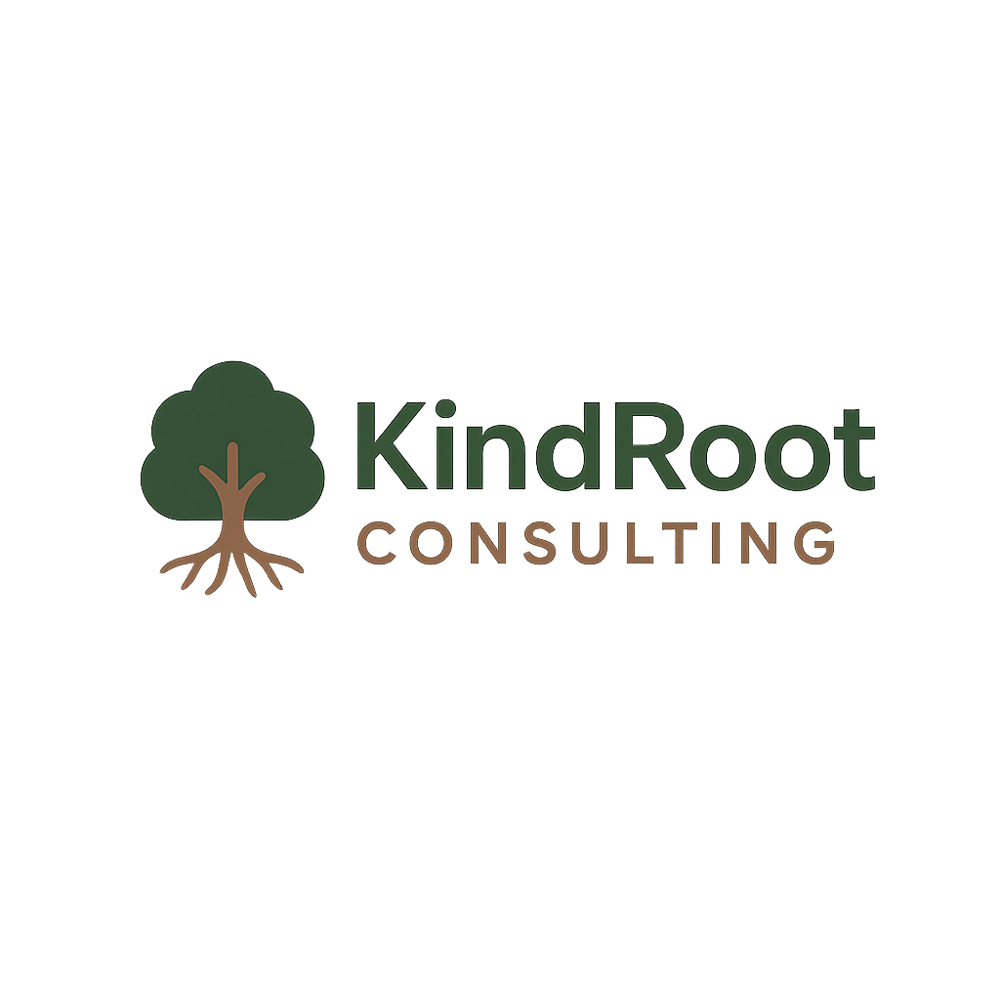

Strengthening missions from the inside out.
At KindRoot Consulting, we believe sustainable change starts from the inside—within the systems nonprofits use and the people who lead them.
We partner with purpose-driven organizations to improve their processes and support the wellbeing of their leaders. Because thriving missions need thriving humans.
A 4-week guided sprint for your systems and yourself.
One part operational improvement. One part personal wellness coaching.
The outcome: More clarity. More energy. More impact.
With 15+ years in strategy, innovation, and human-centered design—and certified in behavior change and nutrition—we bring empathy and efficiency to every partnership.
We don’t just fix systems—we help you flourish.
Want to see if KindRoot is a fit for your organization?
Schedule a Free 30-Minute ConsultEmail: hello@kindrootconsulting.com
LinkedIn: [Your LinkedIn]
Instagram: @kindrootconsulting